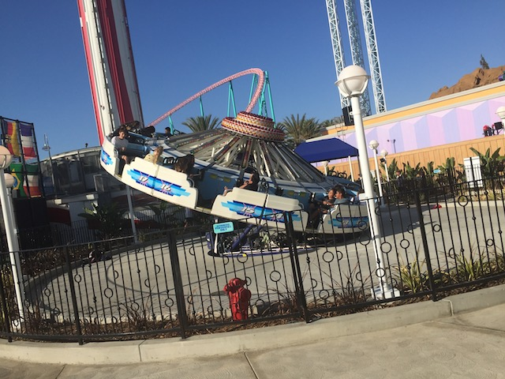
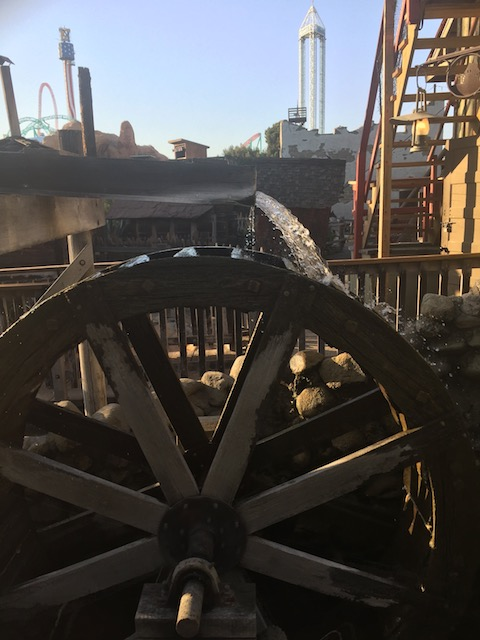
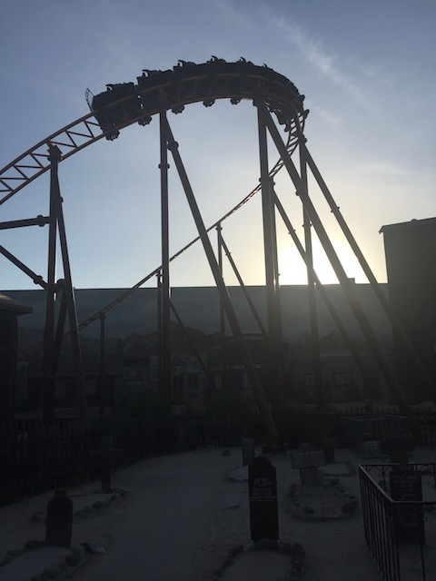

| |
Knotts Summer 2018
All right. After two non-coaster updates in a row, it's time to get back into what we're known for. Roller Coasters. And here we are at Knotts Berry Farm. We went a handful of times in the summer, and here's our big summer update putting it all together. Let's start out at Sierra Sidewinder. I feel like it's been too long since we last rode.
Hmm. Not sure if actually trying to be authentic since this is the Mexican themed area of the park or if just trying to cash in on Coco.
Give me what I want before I beat your ass with a stick!
Seriously. If you're at Knotts, do NOT ignore Montezooma. It's really good, and these Schwarzkophs are becoming a dying breed sadly.
 Don't forget about me! I still exist! I can still take you on a scenic route around Knotts.
Don't forget about me! I still exist! I can still take you on a scenic route around Knotts.
I wish it was Samurai @ Lagoon. But this'll do. Still much better than Windseeker.
I know Silver Bullet gets better with age, but after riding Raptor this summer (Hell, even Banshee), you definetly notice the flaws on Silver Bullet more.
*squack* "SIT DOWN DOWN DOWN DOWN DOWN DOWN DOWN DOWN DOWN DOWN!!!"
HangTime shadow shot.
I'm not sure if it's just because I ride it a lot more and practice makes perfect, but I'm actually decent at Voyage to the Iron Reef. OK. Maybe not decent, but I don't suck nearly as much as I did when the ride first opened.
Still has the strongest launch out of any coaster I've ridden (for now).

Hey. Remember Wipeout? That old flat ride that you just assumed Knotts took out and never noticed because...it's Wipeout. Who cares? Well, it came back.
I can see Tower of Terror from here! =P
You know, let's take a break from the coasters here and check out the nitty gritty of Ghost Town. Checking out the Bird Cage Theater.
Before actually having a career as a famous actor, Steve Martin, like half the people you see on Incrediblecoasters, spent his time working at a theme park. In this case, Knotts Berry Farm.
"SHUT UP KEVIN!"
The same asshole billionaires that own the rest of the country.
Let's get out of here. This place really blows. =P

WHEEL!! I'm not sure what else to say other than...it's a wheel.

All this Ghost Town exploring is fun and all, but when we walk by the "BEST RIDE EVER!!!!", we're stopping and riding.
"I, Kevin, do solemly swear that Pony Express is the best ride ever. Anyone who doesn't like the ride is a pussy. I will spread word that it's not El Toro, Steel Vengeance, or Expedition Ge Force that's the best ride ever. No, it's Pony Express. I will convert everyone into the Pony Express religion, so help me Flying Spaghetti Monster. Ramen"
"But officer! I need all those beer bottles! I'm building my house out of them! And I can't just waste all this beer! I have no choice but to drink it all." *chug*
Hey look! One of my bear friends came to visit me! =)
♫Time for tea! Time for tea! Bread and jam and company!♫
 I know it may fit now since it's October when I'm posting this update (I'm a big procrastinator. I need to work on that), but at the time, it was WAY too early to have out Halloween decorations.
I know it may fit now since it's October when I'm posting this update (I'm a big procrastinator. I need to work on that), but at the time, it was WAY too early to have out Halloween decorations.
Yes. Sip does happen. And in these dark and terrifying times, Wining about it is really tempting. But don't wine about it. How about instead, you DOUGH SOMETHING ABOUT IT!!! Wining is like masturbation. It feels good, but it accomplishes nothing, and you're probably doing both because you're all alone and misreable.
All right. We're out trying a new craze. Liquid Nitrogen Ice Cream. Yeah. We went "WTF!?" at the thought of it too. So we had to try it. And my main question is...how the f*ck is this ice cream? Seriously, this doesn't taste AT ALL like Ice Cream. Eating Liquid Nitrogen Ice Cream is...the closest way I can describe it is that it's like eating dry Trix combined with smoking weed (Hmm. Weed laced Trix. I'm geting ideas here). The balls taste nothing like ice cream. Just giant peices of cereal, specifically Trix. And then when you eat them, you get a big blast of liquid nitrogen, which...it's just a bunch of gas in your mouth that makes you wanna exhale. That part literally feels like smoking. Liquid Nitrogen Ice Cream is as close as you can get to smoking while still not smoking. And it tastes NOTHING like ice cream. So yeah. It's OK. Fun to try once for the sake of saying you've tried it. But it's just a gimmick food. It tastes like Trix with chocolate sauce drizzled on it. I'd rather eat real ice cream if I wanted ice cream. And if I wanted the exhale blowing smoke factor, I'd just smoke weed instead.
And finally, let's end this night by watching Disneyland's fireworks from an Orange County Mall Parking Lot because we're cheap assholes like that.
 I know we talked all about HangTime in an Opening Day Update for the ride, but we still rode it more over the summer.
I know we talked all about HangTime in an Opening Day Update for the ride, but we still rode it more over the summer.
 It may not be the new hotness like Steel Vengeance, but it's still a really fun new 2018 coaster and a great fit for Knotts Berry Farm.
It may not be the new hotness like Steel Vengeance, but it's still a really fun new 2018 coaster and a great fit for Knotts Berry Farm.
Noted. Rowing your boat underneath HangTime is a bad idea.
Eh. Not much to say about Amber Waves. Resteraunt in the Knotts Hotel. Standard American Food. Good, but nothing to write home about.
You coaster nerds are out too busy having fun riding roller coasters, jumping off cliffs, and stuff like that! Learn some history god damn it!
Hmm. The place is empty. I guess even the animatronics were so disgusted with everything going on that they couldn't bear to be in here.
And we're back at Soak City.
 You know, it's funny. I used to never go to Soak City, but always made it out to Six Flags Hurricane Harbor. But lately, it seems the roles have reversed. I now make it out to Soak City every year, but I missed Hurricane Harbor this year.
You know, it's funny. I used to never go to Soak City, but always made it out to Six Flags Hurricane Harbor. But lately, it seems the roles have reversed. I now make it out to Soak City every year, but I missed Hurricane Harbor this year.
Man. People around here really can't boat for sh*t. They keep on crashing.
Stormwatch is fun and all, but...they really have to do something about the inside of these slides being so damn stuffy.
We need more fat people with us to really make this fun.
OK Jason. WTF was up with you on Pointbreak?
 For the longest time, I wondered why everyone only wanted to do the outdoor slide and not the indoor slides. I thought it was because they were pussies afraid of the dark. No! It's because those inside slides are f*cking stuffy!
For the longest time, I wondered why everyone only wanted to do the outdoor slide and not the indoor slides. I thought it was because they were pussies afraid of the dark. No! It's because those inside slides are f*cking stuffy!
Hmm. Looks like Mrs. Knotts is expanding their menu options. >=)
And speaking of exotic meats, we end this update at Fuddruckers. My favorite burger joint, and the only chain one I know that serves Buffalo Burgers! Knotts was a lot of fun this year and I look foreward to more visits to the park in the future.
Home
|